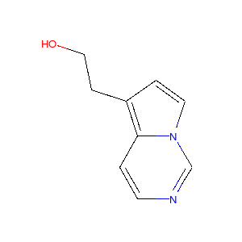
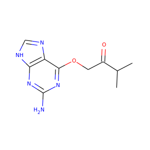
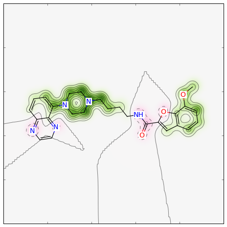
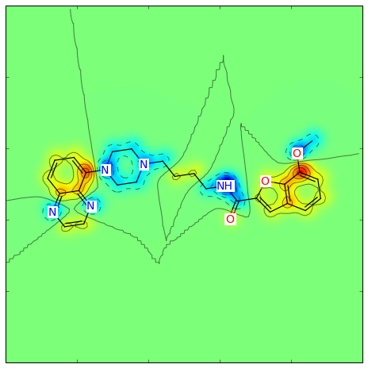

Getting Started with the RDKit in Python¶
What is this?¶
This document is intended to provide an overview of how one can use the RDKit functionality from Python. It’s not comprehensive and it’s not a manual.
If you find mistakes, or have suggestions for improvements, please either fix them yourselves in the source document (the .rst file) or send them to the mailing list: rdkit-devel@lists.sourceforge.net In particular, if you find yourself spending time working out how to do something that doesn’t appear to be documented please contribute by writing it up for this document. Contributing to the documentation is a great service both to the RDKit community and to your future self.
Reading and Writing Molecules¶
Reading single molecules¶
The majority of the basic molecular functionality is found in module rdkit.Chem:
>>> from __future__ import print_function
>>> from rdkit import Chem
Individual molecules can be constructed using a variety of approaches:
>>> m = Chem.MolFromSmiles('Cc1ccccc1')
>>> m = Chem.MolFromMolFile('data/input.mol')
>>> stringWithMolData=open('data/input.mol','r').read()
>>> m = Chem.MolFromMolBlock(stringWithMolData)
All of these functions return a rdkit.Chem.rdchem.Mol object on success:
>>> m
<rdkit.Chem.rdchem.Mol object at 0x...>
or None on failure:
>>> m = Chem.MolFromMolFile('data/invalid.mol')
>>> m is None
True
An attempt is made to provide sensible error messages:
>>> m1 = Chem.MolFromSmiles('CO(C)C')
displays a message like: [12:18:01] Explicit valence for atom # 1 O greater than permitted and
>>> m2 = Chem.MolFromSmiles('c1cc1')
displays something like: [12:20:41] Can't kekulize mol. In each case the value None is returned:
>>> m1 is None
True
>>> m2 is None
True
Reading sets of molecules¶
Groups of molecules are read using a Supplier (for example, an rdkit.Chem.rdmolfiles.SDMolSupplier or a rdkit.Chem.rdmolfiles.SmilesMolSupplier):
>>> suppl = Chem.SDMolSupplier('data/5ht3ligs.sdf')
>>> for mol in suppl:
... print(mol.GetNumAtoms())
...
20
24
24
26
You can easily produce lists of molecules from a Supplier:
>>> mols = [x for x in suppl]
>>> len(mols)
4
or just treat the Supplier itself as a random-access object:
>>> suppl[0].GetNumAtoms()
20
A good practice is to test each molecule to see if it was correctly read before working with it:
>>> suppl = Chem.SDMolSupplier('data/5ht3ligs.sdf')
>>> for mol in suppl:
... if mol is None: continue
... print(mol.GetNumAtoms())
...
20
24
24
26
An alternate type of Supplier, the rdkit.Chem.rdmolfiles.ForwardSDMolSupplier can be used to read from file-like objects:
>>> inf = open('data/5ht3ligs.sdf','rb')
>>> fsuppl = Chem.ForwardSDMolSupplier(inf)
>>> for mol in fsuppl:
... if mol is None: continue
... print(mol.GetNumAtoms())
...
20
24
24
26
This means that they can be used to read from compressed files:
>>> import gzip
>>> inf = gzip.open('data/actives_5ht3.sdf.gz')
>>> gzsuppl = Chem.ForwardSDMolSupplier(inf)
>>> ms = [x for x in gzsuppl if x is not None]
>>> len(ms)
180
Note that ForwardSDMolSuppliers cannot be used as random-access objects:
>>> fsuppl[0]
Traceback (most recent call last):
...
TypeError: 'ForwardSDMolSupplier' object does not support indexing
Writing molecules¶
Single molecules can be converted to text using several functions present in the rdkit.Chem module.
For example, for SMILES:
>>> m = Chem.MolFromMolFile('data/chiral.mol')
>>> Chem.MolToSmiles(m)
'CC(O)c1ccccc1'
>>> Chem.MolToSmiles(m,isomericSmiles=True)
'C[C@H](O)c1ccccc1'
Note that the SMILES provided is canonical, so the output should be the same no matter how a particular molecule is input:
>>> Chem.MolToSmiles(Chem.MolFromSmiles('C1=CC=CN=C1'))
'c1ccncc1'
>>> Chem.MolToSmiles(Chem.MolFromSmiles('c1cccnc1'))
'c1ccncc1'
>>> Chem.MolToSmiles(Chem.MolFromSmiles('n1ccccc1'))
'c1ccncc1'
If you’d like to have the Kekule form of the SMILES, first Kekulize the molecule, then use the “kekuleSmiles” option:
>>> Chem.Kekulize(m)
>>> Chem.MolToSmiles(m,kekuleSmiles=True)
'CC(O)C1=CC=CC=C1'
Note: as of this writing (Aug 2008), the smiles provided when one requests kekuleSmiles are not canonical. The limitation is not in the SMILES generation, but in the kekulization itself.
MDL Mol blocks are also available:
>>> m2 = Chem.MolFromSmiles('C1CCC1')
>>> print(Chem.MolToMolBlock(m2))
RDKit
4 4 0 0 0 0 0 0 0 0999 V2000
0.0000 0.0000 0.0000 C 0 0 0 0 0 0 0 0 0 0 0 0
0.0000 0.0000 0.0000 C 0 0 0 0 0 0 0 0 0 0 0 0
0.0000 0.0000 0.0000 C 0 0 0 0 0 0 0 0 0 0 0 0
0.0000 0.0000 0.0000 C 0 0 0 0 0 0 0 0 0 0 0 0
1 2 1 0
2 3 1 0
3 4 1 0
4 1 1 0
M END
To include names in the mol blocks, set the molecule’s “_Name” property:
>>> m2.SetProp("_Name","cyclobutane")
>>> print(Chem.MolToMolBlock(m2))
cyclobutane
RDKit
4 4 0 0 0 0 0 0 0 0999 V2000
0.0000 0.0000 0.0000 C 0 0 0 0 0 0 0 0 0 0 0 0
0.0000 0.0000 0.0000 C 0 0 0 0 0 0 0 0 0 0 0 0
0.0000 0.0000 0.0000 C 0 0 0 0 0 0 0 0 0 0 0 0
0.0000 0.0000 0.0000 C 0 0 0 0 0 0 0 0 0 0 0 0
1 2 1 0
2 3 1 0
3 4 1 0
4 1 1 0
M END
In order for atom or bond stereochemistry to be recognised correctly by most software, it’s essential that the Mol block have atomic coordinates. It’s also convenient for many reasons, such as drawing the molecules. Coordinates can be generated using functionality in the rdkit.Chem.AllChem module (see the Chem vs AllChem section for more information).
You can either include 2D coordinates (i.e. a depiction):
>>> from rdkit.Chem import AllChem
>>> AllChem.Compute2DCoords(m2)
0
>>> print(Chem.MolToMolBlock(m2))
cyclobutane
RDKit 2D
4 4 0 0 0 0 0 0 0 0999 V2000
1.0607 -0.0000 0.0000 C 0 0 0 0 0 0 0 0 0 0 0 0
-0.0000 -1.0607 0.0000 C 0 0 0 0 0 0 0 0 0 0 0 0
-1.0607 0.0000 0.0000 C 0 0 0 0 0 0 0 0 0 0 0 0
0.0000 1.0607 0.0000 C 0 0 0 0 0 0 0 0 0 0 0 0
1 2 1 0
2 3 1 0
3 4 1 0
4 1 1 0
M END
Or you can add 3D coordinates by embedding the molecule (we’re using the ETKDG method here, which is described in more detail below):
>>> AllChem.EmbedMolecule(m2,AllChem.ETKDG())
0
>>> print(Chem.MolToMolBlock(m2))
cyclobutane
RDKit 3D
4 4 0 0 0 0 0 0 0 0999 V2000
-0.8321 0.5405 -0.1981 C 0 0 0 0 0 0 0 0 0 0 0 0
-0.3467 -0.8825 -0.2651 C 0 0 0 0 0 0 0 0 0 0 0 0
0.7190 -0.5613 0.7314 C 0 0 0 0 0 0 0 0 0 0 0 0
0.4599 0.9032 0.5020 C 0 0 0 0 0 0 0 0 0 0 0 0
1 2 1 0
2 3 1 0
3 4 1 0
4 1 1 0
M END
To get good 3D conformations, it’s almost always a good idea to add hydrogens to the molecule first:
>>> m3 = Chem.AddHs(m2)
>>> AllChem.EmbedMolecule(m3,AllChem.ETKDG())
0
These can then be removed:
>>> m3 = Chem.RemoveHs(m3)
>>> print(Chem.MolToMolBlock(m3))
cyclobutane
RDKit 3D
4 4 0 0 0 0 0 0 0 0999 V2000
0.3497 0.9755 -0.2202 C 0 0 0 0 0 0 0 0 0 0 0 0
0.9814 -0.3380 0.2534 C 0 0 0 0 0 0 0 0 0 0 0 0
-0.3384 -1.0009 -0.1474 C 0 0 0 0 0 0 0 0 0 0 0 0
-0.9992 0.3532 0.1458 C 0 0 0 0 0 0 0 0 0 0 0 0
1 2 1 0
2 3 1 0
3 4 1 0
4 1 1 0
M END
If you’d like to write the molecules to a file, use Python file objects:
>>> print(Chem.MolToMolBlock(m2),file=open('data/foo.mol','w+'))
>>>
Writing sets of molecules¶
Multiple molecules can be written to a file using an rdkit.Chem.rdmolfiles.SDWriter object:
>>> w = Chem.SDWriter('data/foo.sdf')
>>> for m in mols: w.write(m)
...
>>>
An SDWriter can also be initialized using a file-like object:
>>> from rdkit.six import StringIO
>>> sio = StringIO()
>>> w = Chem.SDWriter(sio)
>>> for m in mols: w.write(m)
...
>>> w.flush()
>>> print(sio.getvalue())
mol-295
RDKit 3D
20 22 0 0 1 0 0 0 0 0999 V2000
2.3200 0.0800 -0.1000 C 0 0 0 0 0 0 0 0 0 0 0 0
1.8400 -1.2200 0.1200 C 0 0 0 0 0 0 0 0 0 0 0 0
...
1 3 1 0
1 4 1 0
2 5 1 0
M END
$$$$
Other available Writers include the rdkit.Chem.rdmolfiles.SmilesWriter and the rdkit.Chem.rdmolfiles.TDTWriter.
Working with Molecules¶
Looping over Atoms and Bonds¶
Once you have a molecule, it’s easy to loop over its atoms and bonds:
>>> m = Chem.MolFromSmiles('C1OC1')
>>> for atom in m.GetAtoms():
... print(atom.GetAtomicNum())
...
6
8
6
>>> print(m.GetBonds()[0].GetBondType())
SINGLE
You can also request individual bonds or atoms:
>>> m.GetAtomWithIdx(0).GetSymbol()
'C'
>>> m.GetAtomWithIdx(0).GetExplicitValence()
2
>>> m.GetBondWithIdx(0).GetBeginAtomIdx()
0
>>> m.GetBondWithIdx(0).GetEndAtomIdx()
1
>>> m.GetBondBetweenAtoms(0,1).GetBondType()
rdkit.Chem.rdchem.BondType.SINGLE
Atoms keep track of their neighbors:
>>> atom = m.GetAtomWithIdx(0)
>>> [x.GetAtomicNum() for x in atom.GetNeighbors()]
[8, 6]
>>> len(atom.GetNeighbors()[-1].GetBonds())
2
Ring Information¶
Atoms and bonds both carry information about the molecule’s rings:
>>> m = Chem.MolFromSmiles('OC1C2C1CC2')
>>> m.GetAtomWithIdx(0).IsInRing()
False
>>> m.GetAtomWithIdx(1).IsInRing()
True
>>> m.GetAtomWithIdx(2).IsInRingSize(3)
True
>>> m.GetAtomWithIdx(2).IsInRingSize(4)
True
>>> m.GetAtomWithIdx(2).IsInRingSize(5)
False
>>> m.GetBondWithIdx(1).IsInRingSize(3)
True
>>> m.GetBondWithIdx(1).IsInRing()
True
But note that the information is only about the smallest rings:
>>> m.GetAtomWithIdx(1).IsInRingSize(5)
False
More detail about the smallest set of smallest rings (SSSR) is available:
>>> ssr = Chem.GetSymmSSSR(m)
>>> len(ssr)
2
>>> list(ssr[0])
[1, 2, 3]
>>> list(ssr[1])
[4, 5, 2, 3]
As the name indicates, this is a symmetrized SSSR; if you are interested in the number of “true” SSSR, use the GetSSSR function.
>>> Chem.GetSSSR(m)
2
The distinction between symmetrized and non-symmetrized SSSR is discussed in more detail below in the section The SSSR Problem.
For more efficient queries about a molecule’s ring systems (avoiding repeated calls to Mol.GetAtomWithIdx), use the rdkit.Chem.rdchem.RingInfo class:
>>> m = Chem.MolFromSmiles('OC1C2C1CC2')
>>> ri = m.GetRingInfo()
>>> ri.NumAtomRings(0)
0
>>> ri.NumAtomRings(1)
1
>>> ri.NumAtomRings(2)
2
>>> ri.IsAtomInRingOfSize(1,3)
True
>>> ri.IsBondInRingOfSize(1,3)
True
Modifying molecules¶
Normally molecules are stored in the RDKit with the hydrogen atoms implicit (e.g. not explicitly present in the molecular graph.
When it is useful to have the hydrogens explicitly present, for example when generating or optimizing the 3D geometry, the rdkit.Chem.rdmolops.AddHs function can be used:
>>> m=Chem.MolFromSmiles('CCO')
>>> m.GetNumAtoms()
3
>>> m2 = Chem.AddHs(m)
>>> m2.GetNumAtoms()
9
The Hs can be removed again using the rdkit.Chem.rdmolops.RemoveHs function:
>>> m3 = Chem.RemoveHs(m2)
>>> m3.GetNumAtoms()
3
RDKit molecules are usually stored with the bonds in aromatic rings having aromatic bond types.
This can be changed with the rdkit.Chem.rdmolops.Kekulize function:
>>> m = Chem.MolFromSmiles('c1ccccc1')
>>> m.GetBondWithIdx(0).GetBondType()
rdkit.Chem.rdchem.BondType.AROMATIC
>>> Chem.Kekulize(m)
>>> m.GetBondWithIdx(0).GetBondType()
rdkit.Chem.rdchem.BondType.DOUBLE
>>> m.GetBondWithIdx(1).GetBondType()
rdkit.Chem.rdchem.BondType.SINGLE
By default, the bonds are still marked as being aromatic:
>>> m.GetBondWithIdx(1).GetIsAromatic()
True
because the flags in the original molecule are not cleared (clearAromaticFlags defaults to False). You can explicitly force or decline a clearing of the flags:
>>> m = Chem.MolFromSmiles('c1ccccc1')
>>> m.GetBondWithIdx(0).GetIsAromatic()
True
>>> m1 = Chem.MolFromSmiles('c1ccccc1')
>>> Chem.Kekulize(m1, clearAromaticFlags=True)
>>> m1.GetBondWithIdx(0).GetIsAromatic()
False
Bonds can be restored to the aromatic bond type using the rdkit.Chem.rdmolops.SanitizeMol function:
>>> Chem.SanitizeMol(m)
rdkit.Chem.rdmolops.SanitizeFlags.SANITIZE_NONE
>>> m.GetBondWithIdx(0).GetBondType()
rdkit.Chem.rdchem.BondType.AROMATIC
The value returned by SanitizeMol() indicates that no problems were encountered.
Working with 2D molecules: Generating Depictions¶
The RDKit has a library for generating depictions (sets of 2D) coordinates for molecules.
This library, which is part of the AllChem module, is accessed using the rdkit.Chem.rdDepictor.Compute2DCoords function:
>>> m = Chem.MolFromSmiles('c1nccc2n1ccc2')
>>> AllChem.Compute2DCoords(m)
0
The 2D conformation is constructed in a canonical orientation and is built to minimize intramolecular clashes, i.e. to maximize the clarity of the drawing.
If you have a set of molecules that share a common template and you’d like to align them to that template, you can do so as follows:
>>> template = Chem.MolFromSmiles('c1nccc2n1ccc2')
>>> AllChem.Compute2DCoords(template)
0
>>> AllChem.GenerateDepictionMatching2DStructure(m,template)
Running this process for a couple of other molecules gives the following depictions:
|  |  |
{kind=link}
{kind=link}
Another option for Compute2DCoords allows you to generate 2D depictions for molecules that closely mimic 3D conformations. This is available using the function GenerateDepictionMatching3DStructure.
Here is an illustration of the results using the ligand from PDB structure 1XP0:
 |
 |
More fine-grained control can be obtained using the core function
rdkit.Chem.rdDepictor.Compute2DCoordsMimicDistmat, but that is
beyond the scope of this document. See the implementation of
GenerateDepictionMatching3DStructure in AllChem.py for an example of
how it is used.
Working with 3D Molecules¶
The RDKit can generate conformations for molecules using two different methods. The original method used distance geometry. [1] The algorithm followed is:
- The molecule’s distance bounds matrix is calculated based on the connection table and a set of rules.
- The bounds matrix is smoothed using a triangle-bounds smoothing algorithm.
- A random distance matrix that satisfies the bounds matrix is generated.
- This distance matrix is embedded in 3D dimensions (producing coordinates for each atom).
- The resulting coordinates are cleaned up somewhat using a crude force field and the bounds matrix.
Note that the conformations that result from this procedure tend to be fairly ugly. They should be cleaned up using a force field. This can be done within the RDKit using its implementation of the Universal Force Field (UFF). [2]
More recently, there is an implementation of the method of Riniker and Landrum [18] which uses torsion angle preferences from the Cambridge Structural Database (CSD) to correct the conformers after distance geometry has been used to generate them. With this method, there should be no need to use a minimisation step to clean up the structures.
The full process of embedding and optimizing a molecule is easier than all the above verbiage makes it sound:
>>> m = Chem.MolFromSmiles('C1CCC1OC')
>>> m2=Chem.AddHs(m)
>>> # use the original distance geometry + minimisation method
>>> AllChem.EmbedMolecule(m2)
0
>>> AllChem.UFFOptimizeMolecule(m2)
0
>>> m3=Chem.AddHs(m)
>>> # use the new method
>>> AllChem.EmbedMolecule(m3, AllChem.ETKDG())
0
The RDKit also has an implementation of the MMFF94 force field available. [12], [13], [14], [15], [16] Please note that the MMFF atom typing code uses its own aromaticity model, so the aromaticity flags of the molecule will be modified after calling MMFF-related methods.
>>> m = Chem.MolFromSmiles('C1CCC1OC')
>>> m2=Chem.AddHs(m)
>>> AllChem.EmbedMolecule(m2)
0
>>> AllChem.MMFFOptimizeMolecule(m2)
0
Note the calls to Chem.AddHs() in the examples above. By default RDKit molecules do not have H atoms explicitly present in the graph, but they are important for getting realistic geometries, so they generally should be added. They can always be removed afterwards if necessary with a call to Chem.RemoveHs().
With the RDKit, multiple conformers can also be generated using the two different embedding methods. In both cases this is simply a matter of running the distance geometry calculation multiple times from different random start points. The option numConfs allows the user to set the number of conformers that should be generated. Otherwise the procedures are as before. The conformers so generated can be aligned to each other and the RMS values calculated.
>>> m = Chem.MolFromSmiles('C1CCC1OC')
>>> m2=Chem.AddHs(m)
>>> # run distance geometry 10 times
>>> cids = AllChem.EmbedMultipleConfs(m2, numConfs=10)
>>> print(len(cids))
10
>>> for cid in cids:
... _ = AllChem.MMFFOptimizeMolecule(m2, confId=cid)
>>> rmslist = []
>>> AllChem.AlignMolConformers(m2, RMSlist=rmslist)
>>> print(len(rmslist))
9
rmslist contains the RMS values between the first conformer and all others. The RMS between two specific conformers (e.g. 1 and 9) can also be calculated. The flag prealigned lets the user specify if the conformers are already aligned (by default, the function aligns them).
>>> rms = AllChem.GetConformerRMS(m2, 1, 9, prealigned=True)
We can also generate multiple conformers using the new CSD-based method:
>>> m = Chem.MolFromSmiles('C1CCC1OC')
>>> m3=Chem.AddHs(m)
>>> # run the new CSD-based method
>>> cids = AllChem.EmbedMultipleConfs(m3, 10, AllChem.ETKDG())
>>> print(len(cids))
10
More 3D functionality of the RDKit is described in the Cookbook.
Disclaimer/Warning: Conformation generation is a difficult and subtle task. The original, default, 2D->3D conversion provided with the RDKit is not intended to be a replacement for a “real” conformational analysis tool; it merely provides quick 3D structures for cases when they are required. We believe, however, that the newer ETKDG method[#riniker2]_ should be adequate for most purposes.
Preserving Molecules¶
Molecules can be converted to and from text using Python’s pickling machinery:
>>> m = Chem.MolFromSmiles('c1ccncc1')
>>> import pickle
>>> pkl = pickle.dumps(m)
>>> m2=pickle.loads(pkl)
>>> Chem.MolToSmiles(m2)
'c1ccncc1'
The RDKit pickle format is fairly compact and it is much, much faster to build a molecule from a pickle than from a Mol file or SMILES string, so storing molecules you will be working with repeatedly as pickles can be a good idea.
The raw binary data that is encapsulated in a pickle can also be directly obtained from a molecule:
>>> binStr = m.ToBinary()
This can be used to reconstruct molecules using the Chem.Mol constructor:
>>> m2 = Chem.Mol(binStr)
>>> Chem.MolToSmiles(m2)
'c1ccncc1'
>>> len(binStr)
123
Note that this is smaller than the pickle:
>>> len(binStr) < len(pkl)
True
The small overhead associated with python’s pickling machinery normally doesn’t end up making much of a difference for collections of larger molecules (the extra data associated with the pickle is independent of the size of the molecule, while the binary string increases in length as the molecule gets larger).
Tip: The performance difference associated with storing molecules in a pickled form on disk instead of constantly reparsing an SD file or SMILES table is difficult to overstate. In a test I just ran on my laptop, loading a set of 699 drug-like molecules from an SD file took 10.8 seconds; loading the same molecules from a pickle file took 0.7 seconds. The pickle file is also smaller – 1/3 the size of the SD file – but this difference is not always so dramatic (it’s a particularly fat SD file).
Drawing Molecules¶
The RDKit has some built-in functionality for creating images from molecules found in the rdkit.Chem.Draw package:
>>> suppl = Chem.SDMolSupplier('data/cdk2.sdf')
>>> ms = [x for x in suppl if x is not None]
>>> for m in ms: tmp=AllChem.Compute2DCoords(m)
>>> from rdkit.Chem import Draw
>>> Draw.MolToFile(ms[0],'images/cdk2_mol1.o.png')
>>> Draw.MolToFile(ms[1],'images/cdk2_mol2.o.png')
Producing these images:
|  | 
|
It’s also possible to produce an image grid out of a set of molecules:
>>> img=Draw.MolsToGridImage(ms[:8],molsPerRow=4,subImgSize=(200,200),legends=[x.GetProp("_Name") for x in ms[:8]])
This returns a PIL image, which can then be saved to a file:
>>> img.save('images/cdk2_molgrid.o.png')
The result looks like this:

These would of course look better if the common core were aligned. This is easy enough to do:
>>> p = Chem.MolFromSmiles('[nH]1cnc2cncnc21')
>>> subms = [x for x in ms if x.HasSubstructMatch(p)]
>>> len(subms)
14
>>> AllChem.Compute2DCoords(p)
0
>>> for m in subms: AllChem.GenerateDepictionMatching2DStructure(m,p)
>>> img=Draw.MolsToGridImage(subms,molsPerRow=4,subImgSize=(200,200),legends=[x.GetProp("_Name") for x in subms])
>>> img.save('images/cdk2_molgrid.aligned.o.png')
The result looks like this:

Substructure Searching¶
Substructure matching can be done using query molecules built from SMARTS:
>>> m = Chem.MolFromSmiles('c1ccccc1O')
>>> patt = Chem.MolFromSmarts('ccO')
>>> m.HasSubstructMatch(patt)
True
>>> m.GetSubstructMatch(patt)
(0, 5, 6)
Those are the atom indices in m, ordered as patt’s atoms. To get all of the matches:
>>> m.GetSubstructMatches(patt)
((0, 5, 6), (4, 5, 6))
This can be used to easily filter lists of molecules:
>>> suppl = Chem.SDMolSupplier('data/actives_5ht3.sdf')
>>> patt = Chem.MolFromSmarts('c[NH1]')
>>> matches = []
>>> for mol in suppl:
... if mol.HasSubstructMatch(patt):
... matches.append(mol)
...
>>> len(matches)
22
We can write the same thing more compactly using Python’s list comprehension syntax:
>>> matches = [x for x in suppl if x.HasSubstructMatch(patt)]
>>> len(matches)
22
Substructure matching can also be done using molecules built from SMILES instead of SMARTS:
>>> m = Chem.MolFromSmiles('C1=CC=CC=C1OC')
>>> m.HasSubstructMatch(Chem.MolFromSmarts('CO'))
True
>>> m.HasSubstructMatch(Chem.MolFromSmiles('CO'))
True
But don’t forget that the semantics of the two languages are not exactly equivalent:
>>> m.HasSubstructMatch(Chem.MolFromSmiles('COC'))
True
>>> m.HasSubstructMatch(Chem.MolFromSmarts('COC'))
False
>>> m.HasSubstructMatch(Chem.MolFromSmarts('COc')) #<- need an aromatic C
True
Stereochemistry in substructure matches¶
By default information about stereochemistry is not used in substructure searches:
>>> m = Chem.MolFromSmiles('CC[C@H](F)Cl')
>>> m.HasSubstructMatch(Chem.MolFromSmiles('C[C@H](F)Cl'))
True
>>> m.HasSubstructMatch(Chem.MolFromSmiles('C[C@@H](F)Cl'))
True
>>> m.HasSubstructMatch(Chem.MolFromSmiles('CC(F)Cl'))
True
But this can be changed via the useChirality argument:
>>> m.HasSubstructMatch(Chem.MolFromSmiles('C[C@H](F)Cl'),useChirality=True)
True
>>> m.HasSubstructMatch(Chem.MolFromSmiles('C[C@@H](F)Cl'),useChirality=True)
False
>>> m.HasSubstructMatch(Chem.MolFromSmiles('CC(F)Cl'),useChirality=True)
True
Notice that when useChirality is set a non-chiral query does match a chiral molecule. The same is not true for a chiral query and a non-chiral molecule:
>>> m.HasSubstructMatch(Chem.MolFromSmiles('CC(F)Cl'))
True
>>> m2 = Chem.MolFromSmiles('CCC(F)Cl')
>>> m2.HasSubstructMatch(Chem.MolFromSmiles('C[C@H](F)Cl'),useChirality=True)
False
Atom Map Indices in SMARTS¶
It is possible to attach indices to the atoms in the SMARTS
pattern. This is most often done in reaction SMARTS (see Chemical
Reactions), but is more general than that. For example, in the
SMARTS patterns for torsion angle analysis published by Guba et al.
(DOI: acs.jcim.5b00522) indices are used to define the four atoms of
the torsion of interest. This allows additional atoms to be used to
define the environment of the four torsion atoms, as in
[cH0:1][c:2]([cH0])!@[CX3!r:3]=[NX2!r:4] for an aromatic C=N
torsion. We might wonder in passing why they didn’t use
recursive SMARTS for this, which would have made life easier, but it
is what it is. The atom lists from GetSubstructureMatches are
guaranteed to be in order of the SMARTS, but in this case we’ll get five
atoms so we need a way of picking out, in the correct order, the four of
interest. When the SMARTS is parsed, the relevant atoms are assigned an
atom map number property that we can easily extract:
>>> qmol = Chem.MolFromSmarts( '[cH0:1][c:2]([cH0])!@[CX3!r:3]=[NX2!r:4]' )
>>> ind_map = {}
>>> for atom in qmol.GetAtoms() :
... map_num = atom.GetAtomMapNum()
... if map_num:
... ind_map[map_num-1] = atom.GetIdx()
>>> ind_map
{0: 0, 1: 1, 2: 3, 3: 4}
>>> map_list = [ind_map[x] for x in sorted(ind_map)]
>>> map_list
[0, 1, 3, 4]
Then, when using the query on a molecule you can get the indices of the four matching atoms like this:
>>> mol = Chem.MolFromSmiles('Cc1cccc(C)c1C(C)=NC')
>>> for match in mol.GetSubstructMatches( qmol ) :
... mas = [match[x] for x in map_list]
... print(mas)
[1, 7, 8, 10]
Chemical Transformations¶
The RDKit contains a number of functions for modifying molecules. Note that these transformation functions are intended to provide an easy way to make simple modifications to molecules. For more complex transformations, use the Chemical Reactions functionality.
Substructure-based transformations¶
There’s a variety of functionality for using the RDKit’s substructure-matching machinery for doing quick molecular transformations. These transformations include deleting substructures:
>>> m = Chem.MolFromSmiles('CC(=O)O')
>>> patt = Chem.MolFromSmarts('C(=O)[OH]')
>>> rm = AllChem.DeleteSubstructs(m,patt)
>>> Chem.MolToSmiles(rm)
'C'
replacing substructures:
>>> repl = Chem.MolFromSmiles('OC')
>>> patt = Chem.MolFromSmarts('[$(NC(=O))]')
>>> m = Chem.MolFromSmiles('CC(=O)N')
>>> rms = AllChem.ReplaceSubstructs(m,patt,repl)
>>> rms
(<rdkit.Chem.rdchem.Mol object at 0x...>,)
>>> Chem.MolToSmiles(rms[0])
'COC(C)=O'
as well as simple SAR-table transformations like removing side chains:
>>> m1 = Chem.MolFromSmiles('BrCCc1cncnc1C(=O)O')
>>> core = Chem.MolFromSmiles('c1cncnc1')
>>> tmp = Chem.ReplaceSidechains(m1,core)
>>> Chem.MolToSmiles(tmp)
'[*]c1cncnc1[*]'
and removing cores:
>>> tmp = Chem.ReplaceCore(m1,core)
>>> Chem.MolToSmiles(tmp)
'[*]C(=O)O.[*]CCBr'
To get more detail about the sidechains (e.g. sidechain labels), use isomeric smiles:
>>> Chem.MolToSmiles(tmp,True)
'[1*]CCBr.[2*]C(=O)O'
By default the sidechains are labeled based on the order they are found. They can also be labeled according by the number of that core-atom they’re attached to:
>>> m1 = Chem.MolFromSmiles('c1c(CCO)ncnc1C(=O)O')
>>> tmp=Chem.ReplaceCore(m1,core,labelByIndex=True)
>>> Chem.MolToSmiles(tmp,True)
'[1*]CCO.[5*]C(=O)O'
rdkit.Chem.rdmolops.ReplaceCore returns the sidechains in a single molecule.
This can be split into separate molecules using rdkit.Chem.rdmolops.GetMolFrags :
>>> rs = Chem.GetMolFrags(tmp,asMols=True)
>>> len(rs)
2
>>> Chem.MolToSmiles(rs[0],True)
'[1*]CCO'
>>> Chem.MolToSmiles(rs[1],True)
'[5*]C(=O)O'
Murcko Decomposition¶
The RDKit provides standard Murcko-type decomposition [7] of molecules into scaffolds:
>>> from rdkit.Chem.Scaffolds import MurckoScaffold
>>> cdk2mols = Chem.SDMolSupplier('data/cdk2.sdf')
>>> m1 = cdk2mols[0]
>>> core = MurckoScaffold.GetScaffoldForMol(m1)
>>> Chem.MolToSmiles(core)
'c1ncc2nc[nH]c2n1'
or into a generic framework:
>>> fw = MurckoScaffold.MakeScaffoldGeneric(core)
>>> Chem.MolToSmiles(fw)
'C1CCC2CCCC2C1'
Maximum Common Substructure¶
The FindMCS function find a maximum common substructure (MCS) of two or more molecules:
>>> from rdkit.Chem import rdFMCS
>>> mol1 = Chem.MolFromSmiles("O=C(NCc1cc(OC)c(O)cc1)CCCC/C=C/C(C)C")
>>> mol2 = Chem.MolFromSmiles("CC(C)CCCCCC(=O)NCC1=CC(=C(C=C1)O)OC")
>>> mol3 = Chem.MolFromSmiles("c1(C=O)cc(OC)c(O)cc1")
>>> mols = [mol1,mol2,mol3]
>>> res=rdFMCS.FindMCS(mols)
>>> res
<rdkit.Chem.rdFMCS.MCSResult object at 0x...>
>>> res.numAtoms
10
>>> res.numBonds
10
>>> res.smartsString
'[#6]1(-[#6]):[#6]:[#6](-[#8]-[#6]):[#6](:[#6]:[#6]:1)-[#8]'
>>> res.canceled
False
It returns an MCSResult instance with information about the number of
atoms and bonds in the MCS, the SMARTS string which matches the
identified MCS, and a flag saying if the algorithm timed out. If no
MCS is found then the number of atoms and bonds is set to 0 and the
SMARTS to ''.
By default, two atoms match if they are the same element and two bonds
match if they have the same bond type. Specify atomCompare and
bondCompare to use different comparison functions, as in:
>>> mols = (Chem.MolFromSmiles('NCC'),Chem.MolFromSmiles('OC=C'))
>>> rdFMCS.FindMCS(mols).smartsString
''
>>> rdFMCS.FindMCS(mols, atomCompare=rdFMCS.AtomCompare.CompareAny).smartsString
'[#7,#8]-[#6]'
>>> rdFMCS.FindMCS(mols, bondCompare=rdFMCS.BondCompare.CompareAny).smartsString
'[#6]-,=[#6]'
The options for the atomCompare argument are: CompareAny says that any atom matches any other atom, CompareElements compares by element type, and CompareIsotopes matches based on the isotope label. Isotope labels can be used to implement user-defined atom types. A bondCompare of CompareAny says that any bond matches any other bond, CompareOrderExact says bonds are equivalent if and only if they have the same bond type, and CompareOrder allows single and aromatic bonds to match each other, but requires an exact order match otherwise:
>>> mols = (Chem.MolFromSmiles('c1ccccc1'),Chem.MolFromSmiles('C1CCCC=C1'))
>>> rdFMCS.FindMCS(mols,bondCompare=rdFMCS.BondCompare.CompareAny).smartsString
'[#6]1:,-[#6]:,-[#6]:,-[#6]:,-[#6]:,=[#6]:,-1'
>>> rdFMCS.FindMCS(mols,bondCompare=rdFMCS.BondCompare.CompareOrderExact).smartsString
''
>>> rdFMCS.FindMCS(mols,bondCompare=rdFMCS.BondCompare.CompareOrder).smartsString
'[#6](:,-[#6]:,-[#6]:,-[#6]):,-[#6]:,-[#6]'
A substructure has both atoms and bonds. By default, the algorithm
attempts to maximize the number of bonds found. You can change this by
setting the maximizeBonds argument to False.
Maximizing the number of bonds tends to maximize the number of rings,
although two small rings may have fewer bonds than one large ring.
You might not want a 3-valent nitrogen to match one which is 5-valent.
The default matchValences value of False ignores valence
information. When True, the atomCompare setting is modified to also
require that the two atoms have the same valency.
>>> mols = (Chem.MolFromSmiles('NC1OC1'),Chem.MolFromSmiles('C1OC1[N+](=O)[O-]'))
>>> rdFMCS.FindMCS(mols).numAtoms
4
>>> rdFMCS.FindMCS(mols, matchValences=True).numBonds
3
It can be strange to see a linear carbon chain match a carbon ring,
which is what the ringMatchesRingOnly default of False does. If
you set it to True then ring bonds will only match ring bonds.
>>> mols = [Chem.MolFromSmiles("C1CCC1CCC"), Chem.MolFromSmiles("C1CCCCCC1")]
>>> rdFMCS.FindMCS(mols).smartsString
'[#6](-[#6]-[#6])-[#6]-[#6]-[#6]-[#6]'
>>> rdFMCS.FindMCS(mols, ringMatchesRingOnly=True).smartsString
'[#6](-[#6]-[#6])-[#6]'
You can further restrict things and require that partial rings (as in
this case) are not allowed. That is, if an atom is part of the MCS and
the atom is in a ring of the entire molecule then that atom is also in
a ring of the MCS. Set completeRingsOnly to True to toggle this
requirement and also sets ringMatchesRingOnly to True.
>>> mols = [Chem.MolFromSmiles("CCC1CC2C1CN2"), Chem.MolFromSmiles("C1CC2C1CC2")]
>>> rdFMCS.FindMCS(mols).smartsString
'[#6]1-[#6]-[#6](-[#6]-1-[#6])-[#6]'
>>> rdFMCS.FindMCS(mols, ringMatchesRingOnly=True).smartsString
'[#6](-[#6]-[#6]-[#6]-[#6])-[#6]'
>>> rdFMCS.FindMCS(mols, completeRingsOnly=True).smartsString
'[#6]1-[#6]-[#6]-[#6]-1'
The MCS algorithm will exhaustively search for a maximum common substructure.
Typically this takes a fraction of a second, but for some comparisons this
can take minutes or longer. Use the timeout parameter to stop the search
after the given number of seconds (wall-clock seconds, not CPU seconds) and
return the best match found in that time. If timeout is reached then the
canceled property of the MCSResult will be True instead of False.
>>> mols = [Chem.MolFromSmiles("Nc1ccccc1"*10), Chem.MolFromSmiles("Nc1ccccccccc1"*10)]
>>> rdFMCS.FindMCS(mols, timeout=1).canceled
True
(The MCS after 50 seconds contained 511 atoms.)
Fingerprinting and Molecular Similarity¶
The RDKit has a variety of built-in functionality for generating molecular fingerprints and using them to calculate molecular similarity.
Topological Fingerprints¶
>>> from rdkit import DataStructs
>>> from rdkit.Chem.Fingerprints import FingerprintMols
>>> ms = [Chem.MolFromSmiles('CCOC'), Chem.MolFromSmiles('CCO'),
... Chem.MolFromSmiles('COC')]
>>> fps = [FingerprintMols.FingerprintMol(x) for x in ms]
>>> DataStructs.FingerprintSimilarity(fps[0],fps[1])
0.6...
>>> DataStructs.FingerprintSimilarity(fps[0],fps[2])
0.4...
>>> DataStructs.FingerprintSimilarity(fps[1],fps[2])
0.25
The fingerprinting algorithm used is similar to that used in the Daylight fingerprinter: it identifies and hashes topological paths (e.g. along bonds) in the molecule and then uses them to set bits in a fingerprint of user-specified lengths. After all paths have been identified, the fingerprint is typically folded down until a particular density of set bits is obtained.
The default set of parameters used by the fingerprinter is: - minimum path size: 1 bond - maximum path size: 7 bonds - fingerprint size: 2048 bits - number of bits set per hash: 2 - minimum fingerprint size: 64 bits - target on-bit density 0.3
You can control these by calling
rdkit.Chem.rdmolops.RDKFingerprint directly; this will return
an unfolded fingerprint that you can then fold to the desired density.
The function
FingerprintMol (written
in python) shows how this is done.
The default similarity metric used by FingerprintSimilarity is the Tanimoto similarity. One can use different similarity metrics:
>>> DataStructs.FingerprintSimilarity(fps[0],fps[1], metric=DataStructs.DiceSimilarity)
0.75
Available similarity metrics include Tanimoto, Dice, Cosine, Sokal, Russel, Kulczynski, McConnaughey, and Tversky.
MACCS Keys¶
There is a SMARTS-based implementation of the 166 public MACCS keys.
>>> from rdkit.Chem import MACCSkeys
>>> fps = [MACCSkeys.GenMACCSKeys(x) for x in ms]
>>> DataStructs.FingerprintSimilarity(fps[0],fps[1])
0.5
>>> DataStructs.FingerprintSimilarity(fps[0],fps[2])
0.538...
>>> DataStructs.FingerprintSimilarity(fps[1],fps[2])
0.214...
The MACCS keys were critically evaluated and compared to other MACCS implementations in Q3 2008. In cases where the public keys are fully defined, things looked pretty good.
Atom Pairs and Topological Torsions¶
Atom-pair descriptors [3] are available in several different forms. The standard form is as fingerprint including counts for each bit instead of just zeros and ones:
>>> from rdkit.Chem.AtomPairs import Pairs
>>> ms = [Chem.MolFromSmiles('C1CCC1OCC'),Chem.MolFromSmiles('CC(C)OCC'),Chem.MolFromSmiles('CCOCC')]
>>> pairFps = [Pairs.GetAtomPairFingerprint(x) for x in ms]
Because the space of bits that can be included in atom-pair fingerprints is huge, they are stored in a sparse manner. We can get the list of bits and their counts for each fingerprint as a dictionary:
>>> d = pairFps[-1].GetNonzeroElements()
>>> d[541732]
1
>>> d[1606690]
2
Descriptions of the bits are also available:
>>> Pairs.ExplainPairScore(558115)
(('C', 1, 0), 3, ('C', 2, 0))
The above means: C with 1 neighbor and 0 pi electrons which is 3 bonds from a C with 2 neighbors and 0 pi electrons
The usual metric for similarity between atom-pair fingerprints is Dice similarity:
>>> from rdkit import DataStructs
>>> DataStructs.DiceSimilarity(pairFps[0],pairFps[1])
0.333...
>>> DataStructs.DiceSimilarity(pairFps[0],pairFps[2])
0.258...
>>> DataStructs.DiceSimilarity(pairFps[1],pairFps[2])
0.56
It’s also possible to get atom-pair descriptors encoded as a standard bit vector fingerprint (ignoring the count information):
>>> pairFps = [Pairs.GetAtomPairFingerprintAsBitVect(x) for x in ms]
Since these are standard bit vectors, the rdkit.DataStructs module can be used for similarity:
>>> from rdkit import DataStructs
>>> DataStructs.DiceSimilarity(pairFps[0],pairFps[1])
0.48
>>> DataStructs.DiceSimilarity(pairFps[0],pairFps[2])
0.380...
>>> DataStructs.DiceSimilarity(pairFps[1],pairFps[2])
0.625
Topological torsion descriptors [4] are calculated in essentially the same way:
>>> from rdkit.Chem.AtomPairs import Torsions
>>> tts = [Torsions.GetTopologicalTorsionFingerprintAsIntVect(x) for x in ms]
>>> DataStructs.DiceSimilarity(tts[0],tts[1])
0.166...
At the time of this writing, topological torsion fingerprints have too many bits to be encodeable using the BitVector machinery, so there is no GetTopologicalTorsionFingerprintAsBitVect function.
Morgan Fingerprints (Circular Fingerprints)¶
This family of fingerprints, better known as circular fingerprints [5], is built by applying the Morgan algorithm to a set of user-supplied atom invariants. When generating Morgan fingerprints, the radius of the fingerprint must also be provided :
>>> from rdkit.Chem import AllChem
>>> m1 = Chem.MolFromSmiles('Cc1ccccc1')
>>> fp1 = AllChem.GetMorganFingerprint(m1,2)
>>> fp1
<rdkit.DataStructs.cDataStructs.UIntSparseIntVect object at 0x...>
>>> m2 = Chem.MolFromSmiles('Cc1ncccc1')
>>> fp2 = AllChem.GetMorganFingerprint(m2,2)
>>> DataStructs.DiceSimilarity(fp1,fp2)
0.55...
Morgan fingerprints, like atom pairs and topological torsions, use counts by default, but it’s also possible to calculate them as bit vectors:
>>> fp1 = AllChem.GetMorganFingerprintAsBitVect(m1,2,nBits=1024)
>>> fp1
<rdkit.DataStructs.cDataStructs.ExplicitBitVect object at 0x...>
>>> fp2 = AllChem.GetMorganFingerprintAsBitVect(m2,2,nBits=1024)
>>> DataStructs.DiceSimilarity(fp1,fp2)
0.51...
The default atom invariants use connectivity information similar to those used for the well known ECFP family of fingerprints. Feature-based invariants, similar to those used for the FCFP fingerprints, can also be used. The feature definitions used are defined in the section Feature Definitions Used in the Morgan Fingerprints. At times this can lead to quite different similarity scores:
>>> m1 = Chem.MolFromSmiles('c1ccccn1')
>>> m2 = Chem.MolFromSmiles('c1ccco1')
>>> fp1 = AllChem.GetMorganFingerprint(m1,2)
>>> fp2 = AllChem.GetMorganFingerprint(m2,2)
>>> ffp1 = AllChem.GetMorganFingerprint(m1,2,useFeatures=True)
>>> ffp2 = AllChem.GetMorganFingerprint(m2,2,useFeatures=True)
>>> DataStructs.DiceSimilarity(fp1,fp2)
0.36...
>>> DataStructs.DiceSimilarity(ffp1,ffp2)
0.90...
When comparing the ECFP/FCFP fingerprints and the Morgan fingerprints generated by the RDKit, remember that the 4 in ECFP4 corresponds to the diameter of the atom environments considered, while the Morgan fingerprints take a radius parameter. So the examples above, with radius=2, are roughly equivalent to ECFP4 and FCFP4.
The user can also provide their own atom invariants using the optional
invariants argument to
rdkit.Chem.rdMolDescriptors.GetMorganFingerprint. Here’s a
simple example that uses a constant for the invariant; the resulting
fingerprints compare the topology of molecules:
>>> m1 = Chem.MolFromSmiles('Cc1ccccc1')
>>> m2 = Chem.MolFromSmiles('Cc1ncncn1')
>>> fp1 = AllChem.GetMorganFingerprint(m1,2,invariants=[1]*m1.GetNumAtoms())
>>> fp2 = AllChem.GetMorganFingerprint(m2,2,invariants=[1]*m2.GetNumAtoms())
>>> fp1==fp2
True
Note that bond order is by default still considered:
>>> m3 = Chem.MolFromSmiles('CC1CCCCC1')
>>> fp3 = AllChem.GetMorganFingerprint(m3,2,invariants=[1]*m3.GetNumAtoms())
>>> fp1==fp3
False
But this can also be turned off:
>>> fp1 = AllChem.GetMorganFingerprint(m1,2,invariants=[1]*m1.GetNumAtoms(),
... useBondTypes=False)
>>> fp3 = AllChem.GetMorganFingerprint(m3,2,invariants=[1]*m3.GetNumAtoms(),
... useBondTypes=False)
>>> fp1==fp3
True
Explaining bits from Morgan Fingerprints¶
Information is available about the atoms that contribute to particular bits in the Morgan fingerprint via the bitInfo argument. The dictionary provided is populated with one entry per bit set in the fingerprint, the keys are the bit ids, the values are lists of (atom index, radius) tuples.
>>> m = Chem.MolFromSmiles('c1cccnc1C')
>>> info={}
>>> fp = AllChem.GetMorganFingerprint(m,2,bitInfo=info)
>>> len(fp.GetNonzeroElements())
16
>>> len(info)
16
>>> info[98513984]
((1, 1), (2, 1))
>>> info[4048591891]
((5, 2),)
Interpreting the above: bit 98513984 is set twice: once by atom 1 and once by atom 2, each at radius 1. Bit 4048591891 is set once by atom 5 at radius 2.
Focusing on bit 4048591891, we can extract the submolecule consisting of all atoms within a radius of 2 of atom 5:
>>> env = Chem.FindAtomEnvironmentOfRadiusN(m,2,5)
>>> amap={}
>>> submol=Chem.PathToSubmol(m,env,atomMap=amap)
>>> submol.GetNumAtoms()
6
>>> amap
{0: 3, 1: 5, 3: 4, 4: 0, 5: 1, 6: 2}
And then “explain” the bit by generating SMILES for that submolecule:
>>> Chem.MolToSmiles(submol)
'ccc(C)nc'
This is more useful when the SMILES is rooted at the central atom:
>>> Chem.MolToSmiles(submol,rootedAtAtom=amap[5],canonical=False)
'c(nc)(C)cc'
An alternate (and faster, particularly for large numbers of molecules) approach to do the same thing, using the function MolFragmentToSmiles :
>>> atoms=set()
>>> for bidx in env:
... atoms.add(m.GetBondWithIdx(bidx).GetBeginAtomIdx())
... atoms.add(m.GetBondWithIdx(bidx).GetEndAtomIdx())
...
>>> Chem.MolFragmentToSmiles(m,atomsToUse=list(atoms),bondsToUse=env,rootedAtAtom=5)
'c(C)(cc)nc'
Picking Diverse Molecules Using Fingerprints¶
A common task is to pick a small subset of diverse molecules from a larger set. The RDKit provides a number of approaches for doing this in the rdkit.SimDivFilters module. The most efficient of these uses the MaxMin algorithm. [6] Here’s an example:
Start by reading in a set of molecules and generating Morgan fingerprints:
>>> from rdkit import Chem
>>> from rdkit.Chem.rdMolDescriptors import GetMorganFingerprint
>>> from rdkit import DataStructs
>>> from rdkit.SimDivFilters.rdSimDivPickers import MaxMinPicker
>>> ms = [x for x in Chem.SDMolSupplier('data/actives_5ht3.sdf')]
>>> while ms.count(None): ms.remove(None)
>>> fps = [GetMorganFingerprint(x,3) for x in ms]
>>> nfps = len(fps)
The algorithm requires a function to calculate distances between objects, we’ll do that using DiceSimilarity:
>>> def distij(i,j,fps=fps):
... return 1-DataStructs.DiceSimilarity(fps[i],fps[j])
Now create a picker and grab a set of 10 diverse molecules:
>>> picker = MaxMinPicker()
>>> pickIndices = picker.LazyPick(distij,nfps,10,seed=23)
>>> list(pickIndices)
[93, 109, 154, 6, 95, 135, 151, 61, 137, 139]
Note that the picker just returns indices of the fingerprints; we can get the molecules themselves as follows:
>>> picks = [ms[x] for x in pickIndices]
Generating Similarity Maps Using Fingerprints¶
Similarity maps are a way to visualize the atomic contributions to the similarity between a molecule and a reference molecule. The methodology is described in Ref. [17] . They are in the rdkit.Chem.Draw.SimilarityMaps module :
Start by creating two molecules:
>>> from rdkit import Chem
>>> mol = Chem.MolFromSmiles('COc1cccc2cc(C(=O)NCCCCN3CCN(c4cccc5nccnc54)CC3)oc21')
>>> refmol = Chem.MolFromSmiles('CCCN(CCCCN1CCN(c2ccccc2OC)CC1)Cc1ccc2ccccc2c1')
The SimilarityMaps module supports three kind of fingerprints: atom pairs, topological torsions and Morgan fingerprints.
>>> from rdkit.Chem import Draw
>>> from rdkit.Chem.Draw import SimilarityMaps
>>> fp = SimilarityMaps.GetAPFingerprint(mol, fpType='normal')
>>> fp = SimilarityMaps.GetTTFingerprint(mol, fpType='normal')
>>> fp = SimilarityMaps.GetMorganFingerprint(mol, fpType='bv')
The types of atom pairs and torsions are normal (default), hashed and bit vector (bv). The types of the Morgan fingerprint are bit vector (bv, default) and count vector (count).
The function generating a similarity map for two fingerprints requires the specification of the fingerprint function and optionally the similarity metric. The default for the latter is the Dice similarity. Using all the default arguments of the Morgan fingerprint function, the similarity map can be generated like this:
>>> fig, maxweight = SimilarityMaps.GetSimilarityMapForFingerprint(refmol, mol, SimilarityMaps.GetMorganFingerprint)
Producing this image:
For a different type of Morgan (e.g. count) and radius = 1 instead of 2, as well as a different similarity metric (e.g. Tanimoto), the call becomes:
>>> from rdkit import DataStructs
>>> fig, maxweight = SimilarityMaps.GetSimilarityMapForFingerprint(refmol, mol, lambda m,idx: SimilarityMaps.GetMorganFingerprint(m, atomId=idx, radius=1, fpType='count'), metric=DataStructs.TanimotoSimilarity)
Producing this image:

The convenience function GetSimilarityMapForFingerprint involves the normalisation of the atomic weights such that the maximum absolute weight is 1. Therefore, the function outputs the maximum weight that was found when creating the map.
>>> print(maxweight)
0.05747...
If one does not want the normalisation step, the map can be created like:
>>> weights = SimilarityMaps.GetAtomicWeightsForFingerprint(refmol, mol, SimilarityMaps.GetMorganFingerprint)
>>> print(["%.2f " % w for w in weights])
['0.05 ', ...
>>> fig = SimilarityMaps.GetSimilarityMapFromWeights(mol, weights)
Producing this image:

Descriptor Calculation¶
A variety of descriptors are available within the RDKit. The complete list is provided in List of Available Descriptors.
Most of the descriptors are straightforward to use from Python via the centralized rdkit.Chem.Descriptors module :
>>> from rdkit.Chem import Descriptors
>>> m = Chem.MolFromSmiles('c1ccccc1C(=O)O')
>>> Descriptors.TPSA(m)
37.3
>>> Descriptors.MolLogP(m)
1.3848
Partial charges are handled a bit differently:
>>> m = Chem.MolFromSmiles('c1ccccc1C(=O)O')
>>> AllChem.ComputeGasteigerCharges(m)
>>> float(m.GetAtomWithIdx(0).GetProp('_GasteigerCharge'))
-0.047...
Visualization of Descriptors¶
Similarity maps can be used to visualize descriptors that can be divided into atomic contributions.
The Gasteiger partial charges can be visualized as (using a different color scheme):
>>> from rdkit.Chem.Draw import SimilarityMaps
>>> mol = Chem.MolFromSmiles('COc1cccc2cc(C(=O)NCCCCN3CCN(c4cccc5nccnc54)CC3)oc21')
>>> AllChem.ComputeGasteigerCharges(mol)
>>> contribs = [float(mol.GetAtomWithIdx(i).GetProp('_GasteigerCharge')) for i in range(mol.GetNumAtoms())]
>>> fig = SimilarityMaps.GetSimilarityMapFromWeights(mol, contribs, colorMap='jet', contourLines=10)
Producing this image:
Or for the Crippen contributions to logP:
>>> from rdkit.Chem import rdMolDescriptors
>>> contribs = rdMolDescriptors._CalcCrippenContribs(mol)
>>> fig = SimilarityMaps.GetSimilarityMapFromWeights(mol,[x for x,y in contribs], colorMap='jet', contourLines=10)
Producing this image:
Chemical Reactions¶
The RDKit also supports applying chemical reactions to sets of molecules. One way of constructing chemical reactions is to use a SMARTS-based language similar to Daylight’s Reaction SMILES [11]:
>>> rxn = AllChem.ReactionFromSmarts('[C:1](=[O:2])-[OD1].[N!H0:3]>>[C:1](=[O:2])[N:3]')
>>> rxn
<rdkit.Chem.rdChemReactions.ChemicalReaction object at 0x...>
>>> rxn.GetNumProductTemplates()
1
>>> ps = rxn.RunReactants((Chem.MolFromSmiles('CC(=O)O'),Chem.MolFromSmiles('NC')))
>>> len(ps) # one entry for each possible set of products
1
>>> len(ps[0]) # each entry contains one molecule for each product
1
>>> Chem.MolToSmiles(ps[0][0])
'CNC(C)=O'
>>> ps = rxn.RunReactants((Chem.MolFromSmiles('C(COC(=O)O)C(=O)O'),Chem.MolFromSmiles('NC')))
>>> len(ps)
2
>>> Chem.MolToSmiles(ps[0][0])
'CNC(=O)OCCC(=O)O'
>>> Chem.MolToSmiles(ps[1][0])
'CNC(=O)CCOC(=O)O'
Reactions can also be built from MDL rxn files:
>>> rxn = AllChem.ReactionFromRxnFile('data/AmideBond.rxn')
>>> rxn.GetNumReactantTemplates()
2
>>> rxn.GetNumProductTemplates()
1
>>> ps = rxn.RunReactants((Chem.MolFromSmiles('CC(=O)O'), Chem.MolFromSmiles('NC')))
>>> len(ps)
1
>>> Chem.MolToSmiles(ps[0][0])
'CNC(C)=O'
It is, of course, possible to do reactions more complex than amide bond formation:
>>> rxn = AllChem.ReactionFromSmarts('[C:1]=[C:2].[C:3]=[*:4][*:5]=[C:6]>>[C:1]1[C:2][C:3][*:4]=[*:5][C:6]1')
>>> ps = rxn.RunReactants((Chem.MolFromSmiles('OC=C'), Chem.MolFromSmiles('C=CC(N)=C')))
>>> Chem.MolToSmiles(ps[0][0])
'NC1=CCCC(O)C1'
Note in this case that there are multiple mappings of the reactants onto the templates, so we have multiple product sets:
>>> len(ps)
4
You can use canonical smiles and a python dictionary to get the unique products:
>>> uniqps = {}
>>> for p in ps:
... smi = Chem.MolToSmiles(p[0])
... uniqps[smi] = p[0]
...
>>> sorted(uniqps.keys())
['NC1=CCC(O)CC1', 'NC1=CCCC(O)C1']
Note that the molecules that are produced by the chemical reaction processing code are not sanitized, as this artificial reaction demonstrates:
>>> rxn = AllChem.ReactionFromSmarts('[C:1]=[C:2][C:3]=[C:4].[C:5]=[C:6]>>[C:1]1=[C:2][C:3]=[C:4][C:5]=[C:6]1')
>>> ps = rxn.RunReactants((Chem.MolFromSmiles('C=CC=C'), Chem.MolFromSmiles('C=C')))
>>> Chem.MolToSmiles(ps[0][0])
'C1=CC=CC=C1'
>>> p0 = ps[0][0]
>>> Chem.SanitizeMol(p0)
rdkit.Chem.rdmolops.SanitizeFlags.SANITIZE_NONE
>>> Chem.MolToSmiles(p0)
'c1ccccc1'
Advanced Reaction Functionality¶
Protecting Atoms¶
Sometimes, particularly when working with rxn files, it is difficult to express a reaction exactly enough to not end up with extraneous products. The RDKit provides a method of 「protecting」 atoms to disallow them from taking part in reactions.
This can be demonstrated re-using the amide-bond formation reaction used above. The query for amines isn’t specific enough, so it matches any nitrogen that has at least one H attached. So if we apply the reaction to a molecule that already has an amide bond, the amide N is also treated as a reaction site:
>>> rxn = AllChem.ReactionFromRxnFile('data/AmideBond.rxn')
>>> acid = Chem.MolFromSmiles('CC(=O)O')
>>> base = Chem.MolFromSmiles('CC(=O)NCCN')
>>> ps = rxn.RunReactants((acid,base))
>>> len(ps)
2
>>> Chem.MolToSmiles(ps[0][0])
'CC(=O)N(CCN)C(C)=O'
>>> Chem.MolToSmiles(ps[1][0])
'CC(=O)NCCNC(C)=O'
The first product corresponds to the reaction at the amide N.
We can prevent this from happening by protecting all amide Ns. Here we do it with a substructure query that matches amides and thioamides and then set the 「_protected」 property on matching atoms:
>>> amidep = Chem.MolFromSmarts('[N;$(NC=[O,S])]')
>>> for match in base.GetSubstructMatches(amidep):
... base.GetAtomWithIdx(match[0]).SetProp('_protected','1')
Now the reaction only generates a single product:
>>> ps = rxn.RunReactants((acid,base))
>>> len(ps)
1
>>> Chem.MolToSmiles(ps[0][0])
'CC(=O)NCCNC(C)=O'
Recap Implementation¶
Associated with the chemical reaction functionality is an implementation of the Recap algorithm. [8] Recap uses a set of chemical transformations mimicking common reactions carried out in the lab in order to decompose a molecule into a series of reasonable fragments.
The RDKit rdkit.Chem.Recap implementation keeps track of the hierarchy of transformations that were applied:
>>> from rdkit import Chem
>>> from rdkit.Chem import Recap
>>> m = Chem.MolFromSmiles('c1ccccc1OCCOC(=O)CC')
>>> hierarch = Recap.RecapDecompose(m)
>>> type(hierarch)
<class 'rdkit.Chem.Recap.RecapHierarchyNode'>
The hierarchy is rooted at the original molecule:
>>> hierarch.smiles
'CCC(=O)OCCOc1ccccc1'
and each node tracks its children using a dictionary keyed by SMILES:
>>> ks=hierarch.children.keys()
>>> sorted(ks)
['[*]C(=O)CC', '[*]CCOC(=O)CC', '[*]CCOc1ccccc1', '[*]OCCOc1ccccc1', '[*]c1ccccc1']
The nodes at the bottom of the hierarchy (the leaf nodes) are easily accessible, also as a dictionary keyed by SMILES:
>>> ks=hierarch.GetLeaves().keys()
>>> ks=sorted(ks)
>>> ks
['[*]C(=O)CC', '[*]CCO[*]', '[*]CCOc1ccccc1', '[*]c1ccccc1']
Notice that dummy atoms are used to mark points where the molecule was fragmented.
The nodes themselves have associated molecules:
>>> leaf = hierarch.GetLeaves()[ks[0]]
>>> Chem.MolToSmiles(leaf.mol)
'[*]C(=O)CC'
BRICS Implementation¶
The RDKit also provides an implementation of the BRICS algorithm. [9] BRICS provides another method for fragmenting molecules along synthetically accessible bonds:
>>> from rdkit.Chem import BRICS
>>> cdk2mols = Chem.SDMolSupplier('data/cdk2.sdf')
>>> m1 = cdk2mols[0]
>>> sorted(BRICS.BRICSDecompose(m1))
['[14*]c1nc(N)nc2[nH]cnc12', '[3*]O[3*]', '[4*]CC(=O)C(C)C']
>>> m2 = cdk2mols[20]
>>> sorted(BRICS.BRICSDecompose(m2))
['[1*]C(=O)NN(C)C', '[14*]c1[nH]nc2c1C(=O)c1c([16*])cccc1-2', '[16*]c1ccc([16*])cc1', '[3*]OC', '[5*]N[5*]']
Notice that RDKit BRICS implementation returns the unique fragments generated from a molecule and that the dummy atoms are tagged to indicate which type of reaction applies.
It’s quite easy to generate the list of all fragments for a group of molecules:
>>> allfrags=set()
>>> for m in cdk2mols:
... pieces = BRICS.BRICSDecompose(m)
... allfrags.update(pieces)
>>> len(allfrags)
90
>>> sorted(allfrags)[:5]
['NS(=O)(=O)c1ccc(N/N=C2\\C(=O)Nc3ccc(Br)cc32)cc1', '[1*]C(=O)C(C)C', '[1*]C(=O)NN(C)C', '[1*]C(=O)NN1CC[NH+](C)CC1', '[1*]C(C)=O']
The BRICS module also provides an option to apply the BRICS rules to a set of fragments to create new molecules:
>>> import random
>>> random.seed(127)
>>> fragms = [Chem.MolFromSmiles(x) for x in sorted(allfrags)]
>>> ms = BRICS.BRICSBuild(fragms)
The result is a generator object:
>>> ms
<generator object BRICSBuild at 0x...>
That returns molecules on request:
>>> prods = [next(ms) for x in range(10)]
>>> prods[0]
<rdkit.Chem.rdchem.Mol object at 0x...>
The molecules have not been sanitized, so it’s a good idea to at least update the valences before continuing:
>>> for prod in prods:
... prod.UpdatePropertyCache(strict=False)
...
>>> Chem.MolToSmiles(prods[0],True)
'COCCO'
>>> Chem.MolToSmiles(prods[1],True)
'O=C1Nc2ccc3ncsc3c2/C1=C/NCCO'
>>> Chem.MolToSmiles(prods[2],True)
'O=C1Nc2ccccc2/C1=C/NCCO'
Other fragmentation approaches¶
In addition to the methods described above, the RDKit provide a very flexible generic function for fragmenting molecules along user-specified bonds.
Here’s a quick demonstration of using that to break all bonds between atoms in rings and atoms not in rings. We start by finding all the atom pairs:
>>> m = Chem.MolFromSmiles('CC1CC(O)C1CCC1CC1')
>>> bis = m.GetSubstructMatches(Chem.MolFromSmarts('[!R][R]'))
>>> bis
((0, 1), (4, 3), (6, 5), (7, 8))
then we get the corresponding bond indices:
>>> bs = [m.GetBondBetweenAtoms(x,y).GetIdx() for x,y in bis]
>>> bs
[0, 3, 5, 7]
then we use those bond indices as input to the fragmentation function:
>>> nm = Chem.FragmentOnBonds(m,bs)
the output is a molecule that has dummy atoms marking the places where bonds were broken:
>>> Chem.MolToSmiles(nm,True)
'[*]C1CC([4*])C1[6*].[1*]C.[3*]O.[5*]CC[8*].[7*]C1CC1'
By default the attachment points are labelled (using isotopes) with the index of the atom that was removed. We can also provide our own set of atom labels in the form of pairs of unsigned integers. The first value in each pair is used as the label for the dummy that replaces the bond’s begin atom, the second value in each pair is for the dummy that replaces the bond’s end atom. Here’s an example, repeating the analysis above and marking the positions where the non-ring atoms were with the label 10 and marking the positions where the ring atoms were with label 1:
>>> bis = m.GetSubstructMatches(Chem.MolFromSmarts('[!R][R]'))
>>> bs = []
>>> labels=[]
>>> for bi in bis:
... b = m.GetBondBetweenAtoms(bi[0],bi[1])
... if b.GetBeginAtomIdx()==bi[0]:
... labels.append((10,1))
... else:
... labels.append((1,10))
... bs.append(b.GetIdx())
>>> nm = Chem.FragmentOnBonds(m,bs,dummyLabels=labels)
>>> Chem.MolToSmiles(nm,True)
'[1*]C.[1*]CC[1*].[1*]O.[10*]C1CC([10*])C1[10*].[10*]C1CC1'
Chemical Features and Pharmacophores¶
Chemical Features¶
Chemical features in the RDKit are defined using a SMARTS-based feature definition language (described in detail in the RDKit book). To identify chemical features in molecules, you first must build a feature factory:
>>> from rdkit import Chem
>>> from rdkit.Chem import ChemicalFeatures
>>> from rdkit import RDConfig
>>> import os
>>> fdefName = os.path.join(RDConfig.RDDataDir,'BaseFeatures.fdef')
>>> factory = ChemicalFeatures.BuildFeatureFactory(fdefName)
and then use the factory to search for features:
>>> m = Chem.MolFromSmiles('OCc1ccccc1CN')
>>> feats = factory.GetFeaturesForMol(m)
>>> len(feats)
8
The individual features carry information about their family (e.g. donor, acceptor, etc.), type (a more detailed description), and the atom(s) that is/are associated with the feature:
>>> feats[0].GetFamily()
'Donor'
>>> feats[0].GetType()
'SingleAtomDonor'
>>> feats[0].GetAtomIds()
(0,)
>>> feats[4].GetFamily()
'Aromatic'
>>> feats[4].GetAtomIds()
(2, 3, 4, 5, 6, 7)
If the molecule has coordinates, then the features will also have reasonable locations:
>>> from rdkit.Chem import AllChem
>>> AllChem.Compute2DCoords(m)
0
>>> feats[0].GetPos()
<rdkit.Geometry.rdGeometry.Point3D object at 0x...>
>>> list(feats[0].GetPos())
[2.07..., -2.335..., 0.0]
2D Pharmacophore Fingerprints¶
Combining a set of chemical features with the 2D (topological) distances between them gives a 2D pharmacophore. When the distances are binned, unique integer ids can be assigned to each of these pharmacophores and they can be stored in a fingerprint. Details of the encoding are in the The RDKit Book.
Generating pharmacophore fingerprints requires chemical features generated via the usual RDKit feature-typing mechanism:
>>> from rdkit import Chem
>>> from rdkit.Chem import ChemicalFeatures
>>> fdefName = 'data/MinimalFeatures.fdef'
>>> featFactory = ChemicalFeatures.BuildFeatureFactory(fdefName)
The fingerprints themselves are calculated using a signature (fingerprint) factory, which keeps track of all the parameters required to generate the pharmacophore:
>>> from rdkit.Chem.Pharm2D.SigFactory import SigFactory
>>> sigFactory = SigFactory(featFactory,minPointCount=2,maxPointCount=3)
>>> sigFactory.SetBins([(0,2),(2,5),(5,8)])
>>> sigFactory.Init()
>>> sigFactory.GetSigSize()
885
The signature factory is now ready to be used to generate fingerprints, a task which is done using the rdkit.Chem.Pharm2D.Generate module:
>>> from rdkit.Chem.Pharm2D import Generate
>>> mol = Chem.MolFromSmiles('OCC(=O)CCCN')
>>> fp = Generate.Gen2DFingerprint(mol,sigFactory)
>>> fp
<rdkit.DataStructs.cDataStructs.SparseBitVect object at 0x...>
>>> len(fp)
885
>>> fp.GetNumOnBits()
57
Details about the bits themselves, including the features that are involved and the binned distance matrix between the features, can be obtained from the signature factory:
>>> list(fp.GetOnBits())[:5]
[1, 2, 6, 7, 8]
>>> sigFactory.GetBitDescription(1)
'Acceptor Acceptor |0 1|1 0|'
>>> sigFactory.GetBitDescription(2)
'Acceptor Acceptor |0 2|2 0|'
>>> sigFactory.GetBitDescription(8)
'Acceptor Donor |0 2|2 0|'
>>> list(fp.GetOnBits())[-5:]
[704, 706, 707, 708, 714]
>>> sigFactory.GetBitDescription(707)
'Donor Donor PosIonizable |0 1 2|1 0 1|2 1 0|'
>>> sigFactory.GetBitDescription(714)
'Donor Donor PosIonizable |0 2 2|2 0 0|2 0 0|'
For the sake of convenience (to save you from having to edit the fdef file every time) it is possible to disable particular feature types within the SigFactory:
>>> sigFactory.skipFeats=['PosIonizable']
>>> sigFactory.Init()
>>> sigFactory.GetSigSize()
510
>>> fp2 = Generate.Gen2DFingerprint(mol,sigFactory)
>>> fp2.GetNumOnBits()
36
Another possible set of feature definitions for 2D pharmacophore fingerprints in the RDKit are those published by Gobbi and Poppinger. [10] The module rdkit.Chem.Pharm2D.Gobbi_Pharm2D has a pre-configured signature factory for these fingerprint types. Here’s an example of using it:
>>> from rdkit import Chem
>>> from rdkit.Chem.Pharm2D import Gobbi_Pharm2D,Generate
>>> m = Chem.MolFromSmiles('OCC=CC(=O)O')
>>> fp = Generate.Gen2DFingerprint(m,Gobbi_Pharm2D.factory)
>>> fp
<rdkit.DataStructs.cDataStructs.SparseBitVect object at 0x...>
>>> fp.GetNumOnBits()
8
>>> list(fp.GetOnBits())
[23, 30, 150, 154, 157, 185, 28878, 30184]
>>> Gobbi_Pharm2D.factory.GetBitDescription(157)
'HA HD |0 3|3 0|'
>>> Gobbi_Pharm2D.factory.GetBitDescription(30184)
'HA HD HD |0 3 0|3 0 3|0 3 0|'
Molecular Fragments¶
The RDKit contains a collection of tools for fragmenting molecules and working with those fragments. Fragments are defined to be made up of a set of connected atoms that may have associated functional groups. This is more easily demonstrated than explained:
>>> fName=os.path.join(RDConfig.RDDataDir,'FunctionalGroups.txt')
>>> from rdkit.Chem import FragmentCatalog
>>> fparams = FragmentCatalog.FragCatParams(1,6,fName)
>>> fparams.GetNumFuncGroups()
39
>>> fcat=FragmentCatalog.FragCatalog(fparams)
>>> fcgen=FragmentCatalog.FragCatGenerator()
>>> m = Chem.MolFromSmiles('OCC=CC(=O)O')
>>> fcgen.AddFragsFromMol(m,fcat)
3
>>> fcat.GetEntryDescription(0)
'C<-O>C'
>>> fcat.GetEntryDescription(1)
'C=C<-C(=O)O>'
>>> fcat.GetEntryDescription(2)
'C<-C(=O)O>=CC<-O>'
The fragments are stored as entries in a
rdkit.Chem.rdfragcatalog.FragCatalog. Notice that the
entry descriptions include pieces in angular brackets (e.g. between
『<』 and 『>』). These describe the functional groups attached to the
fragment. For example, in the above example, the catalog entry 0
corresponds to an ethyl fragment with an alcohol attached to one of
the carbons and entry 1 is an ethylene with a carboxylic acid on one
carbon. Detailed information about the functional groups can be
obtained by asking the fragment for the ids of the functional groups
it contains and then looking those ids up in the
rdkit.Chem.rdfragcatalog.FragCatParams
object:
>>> list(fcat.GetEntryFuncGroupIds(2))
[34, 1]
>>> fparams.GetFuncGroup(1)
<rdkit.Chem.rdchem.Mol object at 0x...>
>>> Chem.MolToSmarts(fparams.GetFuncGroup(1))
'*-C(=O)-,:[O&D1]'
>>> Chem.MolToSmarts(fparams.GetFuncGroup(34))
'*-[O&D1]'
>>> fparams.GetFuncGroup(1).GetProp('_Name')
'-C(=O)O'
>>> fparams.GetFuncGroup(34).GetProp('_Name')
'-O'
The catalog is hierarchical: smaller fragments are combined to form
larger ones. From a small fragment, one can find the larger fragments
to which it contributes using the
rdkit.Chem.rdfragcatalog.FragCatalog.GetEntryDownIds
method:
>>> fcat=FragmentCatalog.FragCatalog(fparams)
>>> m = Chem.MolFromSmiles('OCC(NC1CC1)CCC')
>>> fcgen.AddFragsFromMol(m,fcat)
15
>>> fcat.GetEntryDescription(0)
'C<-O>C'
>>> fcat.GetEntryDescription(1)
'CN<-cPropyl>'
>>> list(fcat.GetEntryDownIds(0))
[3, 4]
>>> fcat.GetEntryDescription(3)
'C<-O>CC'
>>> fcat.GetEntryDescription(4)
'C<-O>CN<-cPropyl>'
The fragments from multiple molecules can be added to a catalog:
>>> suppl = Chem.SmilesMolSupplier('data/bzr.smi')
>>> ms = [x for x in suppl]
>>> fcat=FragmentCatalog.FragCatalog(fparams)
>>> for m in ms: nAdded=fcgen.AddFragsFromMol(m,fcat)
>>> fcat.GetNumEntries()
1169
>>> fcat.GetEntryDescription(0)
'Cc'
>>> fcat.GetEntryDescription(100)
'cc-nc(C)n'
The fragments in a catalog are unique, so adding a molecule a second time doesn’t add any new entries:
>>> fcgen.AddFragsFromMol(ms[0],fcat)
0
>>> fcat.GetNumEntries()
1169
Once a rdkit.Chem.rdfragcatalog.FragCatalog has been
generated, it can be used to fingerprint molecules:
>>> fpgen = FragmentCatalog.FragFPGenerator()
>>> fp = fpgen.GetFPForMol(ms[8],fcat)
>>> fp
<rdkit.DataStructs.cDataStructs.ExplicitBitVect object at 0x...>
>>> fp.GetNumOnBits()
189
The rest of the machinery associated with fingerprints can now be applied to these fragment fingerprints. For example, it’s easy to find the fragments that two molecules have in common by taking the intersection of their fingerprints:
>>> fp2 = fpgen.GetFPForMol(ms[7],fcat)
>>> andfp = fp&fp2
>>> obl = list(andfp.GetOnBits())
>>> fcat.GetEntryDescription(obl[-1])
'ccc(cc)NC<=O>'
>>> fcat.GetEntryDescription(obl[-5])
'c<-X>ccc(N)cc'
or we can find the fragments that distinguish one molecule from another:
>>> combinedFp=fp&(fp^fp2) # can be more efficent than fp&(!fp2)
>>> obl = list(combinedFp.GetOnBits())
>>> fcat.GetEntryDescription(obl[-1])
'cccc(N)cc'
Or we can use the bit ranking functionality from the
rdkit.ML.InfoTheory.rdInfoTheory.InfoBitRanker class to identify fragments
that distinguish actives from inactives:
>>> suppl = Chem.SDMolSupplier('data/bzr.sdf')
>>> sdms = [x for x in suppl]
>>> fps = [fpgen.GetFPForMol(x,fcat) for x in sdms]
>>> from rdkit.ML.InfoTheory import InfoBitRanker
>>> ranker = InfoBitRanker(len(fps[0]),2)
>>> acts = [float(x.GetProp('ACTIVITY')) for x in sdms]
>>> for i,fp in enumerate(fps):
... act = int(acts[i]>7)
... ranker.AccumulateVotes(fp,act)
...
>>> top5 = ranker.GetTopN(5)
>>> for id,gain,n0,n1 in top5:
... print(int(id),'%.3f'%gain,int(n0),int(n1))
...
702 0.081 20 17
328 0.073 23 25
341 0.073 30 43
173 0.073 30 43
1034 0.069 5 53
The columns above are: bitId, infoGain, nInactive, nActive. Note that this approach isn’t particularly effective for this artificial example.
Non-Chemical Functionality¶
Bit vectors¶
Bit vectors are containers for efficiently storing a set number of binary values, e.g. for fingerprints. The RDKit includes two types of fingerprints differing in how they store the values internally; the two types are easily interconverted but are best used for different purpose:
- SparseBitVects store only the list of bits set in the vector; they are well suited for storing very large, very sparsely occupied vectors like pharmacophore fingerprints. Some operations, such as retrieving the list of on bits, are quite fast. Others, such as negating the vector, are very, very slow.
- ExplicitBitVects keep track of both on and off bits. They are generally faster than SparseBitVects, but require more memory to store.
Discrete value vectors¶
3D grids¶
Points¶
Getting Help¶
There is a reasonable amount of documentation available within from the RDKit’s docstrings. These are accessible using Python’s help command:
>>> m = Chem.MolFromSmiles('Cc1ccccc1')
>>> m.GetNumAtoms()
7
>>> help(m.GetNumAtoms)
Help on method GetNumAtoms:
GetNumAtoms(...) method of rdkit.Chem.rdchem.Mol instance
GetNumAtoms( (Mol)arg1 [, (int)onlyHeavy=-1 [, (bool)onlyExplicit=True]]) -> int :
Returns the number of atoms in the molecule.
ARGUMENTS:
- onlyExplicit: (optional) include only explicit atoms (atoms in the molecular graph)
defaults to 1.
NOTE: the onlyHeavy argument is deprecated
C++ signature :
int GetNumAtoms(RDKit::ROMol [,int=-1 [,bool=True]])
>>> m.GetNumAtoms(onlyExplicit=False)
15
When working in an environment that does command completion or tooltips, one can see the available methods quite easily. Here’s a sample screenshot from within the Jupyter notebook:
Advanced Topics/Warnings¶
Editing Molecules¶
Some of the functionality provided allows molecules to be edited “in place”:
>>> m = Chem.MolFromSmiles('c1ccccc1')
>>> m.GetAtomWithIdx(0).SetAtomicNum(7)
>>> Chem.SanitizeMol(m)
rdkit.Chem.rdmolops.SanitizeFlags.SANITIZE_NONE
>>> Chem.MolToSmiles(m)
'c1ccncc1'
Do not forget the sanitization step, without it one can end up with results that look ok (so long as you don’t think):
>>> m = Chem.MolFromSmiles('c1ccccc1')
>>> m.GetAtomWithIdx(0).SetAtomicNum(8)
>>> Chem.MolToSmiles(m)
'c1ccocc1'
but that are, of course, complete nonsense, as sanitization will indicate:
>>> Chem.SanitizeMol(m)
Traceback (most recent call last):
File "/usr/lib/python2.6/doctest.py", line 1253, in __run
compileflags, 1) in test.globs
File "<doctest default[0]>", line 1, in <module>
Chem.SanitizeMol(m)
ValueError: Sanitization error: Can't kekulize mol
More complex transformations can be carried out using the
rdkit.Chem.rdchem.RWMol class:
>>> m = Chem.MolFromSmiles('CC(=O)C=CC=C')
>>> mw = Chem.RWMol(m)
>>> mw.ReplaceAtom(4,Chem.Atom(7))
>>> mw.AddAtom(Chem.Atom(6))
7
>>> mw.AddAtom(Chem.Atom(6))
8
>>> mw.AddBond(6,7,Chem.BondType.SINGLE)
7
>>> mw.AddBond(7,8,Chem.BondType.DOUBLE)
8
>>> mw.AddBond(8,3,Chem.BondType.SINGLE)
9
>>> mw.RemoveAtom(0)
>>> mw.GetNumAtoms()
8
The RWMol can be used just like an ROMol:
>>> Chem.MolToSmiles(mw)
'O=CC1C=CC=CN=1'
>>> Chem.SanitizeMol(mw)
rdkit.Chem.rdmolops.SanitizeFlags.SANITIZE_NONE
>>> Chem.MolToSmiles(mw)
'O=Cc1ccccn1'
It is even easier to generate nonsense using the RWMol than it is with standard molecules. If you need chemically reasonable results, be certain to sanitize the results.
Miscellaneous Tips and Hints¶
Chem vs AllChem¶
The majority of “basic” chemical functionality (e.g. reading/writing molecules, substructure searching, molecular cleanup, etc.) is in the rdkit.Chem module. More advanced, or less frequently used, functionality is in rdkit.Chem.AllChem. The distinction has been made to speed startup and lower import times; there’s no sense in loading the 2D->3D library and force field implementation if one is only interested in reading and writing a couple of molecules. If you find the Chem/AllChem thing annoying or confusing, you can use python’s “import … as …” syntax to remove the irritation:
>>> from rdkit.Chem import AllChem as Chem
>>> m = Chem.MolFromSmiles('CCC')
The SSSR Problem¶
As others have ranted about with more energy and eloquence than I intend to, the definition of a molecule’s smallest set of smallest rings is not unique. In some high symmetry molecules, a “true” SSSR will give results that are unappealing. For example, the SSSR for cubane only contains 5 rings, even though there are “obviously” 6. This problem can be fixed by implementing a small (instead of smallest) set of smallest rings algorithm that returns symmetric results. This is the approach that we took with the RDKit.
Because it is sometimes useful to be able to count how many SSSR rings
are present in the molecule, there is a
rdkit.Chem.rdmolops.GetSSSR function, but this only returns the
SSSR count, not the potentially non-unique set of rings.
List of Available Descriptors¶
| Descriptor/Descriptor Family | Notes | Language |
| Gasteiger/Marsili Partial Charges | Tetrahedron 36:3219-28 (1980) | C++ |
| BalabanJ | Chem. Phys. Lett. 89:399-404 (1982) | Python |
| BertzCT | J. Am. Chem. Soc. 103:3599-601 (1981) | Python |
| Ipc | J. Chem. Phys. 67:4517-33 (1977) | Python |
| HallKierAlpha | Rev. Comput. Chem. 2:367-422 (1991) | C++ |
| Kappa1 - Kappa3 | Rev. Comput. Chem. 2:367-422 (1991) | C++ |
| Chi0, Chi1 | Rev. Comput. Chem. 2:367-422 (1991) | Python |
| Chi0n - Chi4n | Rev. Comput. Chem. 2:367-422 (1991) | C++ |
| Chi0v - Chi4v | Rev. Comput. Chem. 2:367-422 (1991) | C++ |
| MolLogP | Wildman and Crippen JCICS 39:868-73 (1999) | C++ |
| MolMR | Wildman and Crippen JCICS 39:868-73 (1999) | C++ |
| MolWt | C++ | |
| ExactMolWt | C++ | |
| HeavyAtomCount | C++ | |
| HeavyAtomMolWt | C++ | |
| NHOHCount | C++ | |
| NOCount | C++ | |
| NumHAcceptors | C++ | |
| NumHDonors | C++ | |
| NumHeteroatoms | C++ | |
| NumRotatableBonds | C++ | |
| NumValenceElectrons | C++ | |
| NumAmideBonds | C++ | |
| Num{Aromatic,Saturated,Aliphatic}Rings | C++ | |
| Num{Aromatic,Saturated,Aliphatic}{Hetero,Carbo}cycles | C++ | |
| RingCount | C++ | |
| FractionCSP3 | C++ | |
| NumSpiroAtoms |
(atoms shared between rings that share exactly one atom) |
C++ |
| NumBridgeheadAtoms | Number of bridgehead atoms (atoms shared between rings that share at least two bonds) | C++ |
| TPSA | J. Med. Chem. 43:3714-7, (2000) | C++ |
| LabuteASA | J. Mol. Graph. Mod. 18:464-77 (2000) | C++ |
| PEOE_VSA1 - PEOE_VSA14 | MOE-type descriptors using partial charges and surface area contributions http://www.chemcomp.com/journal/vsadesc.htm | C++ |
| SMR_VSA1 - SMR_VSA10 | MOE-type descriptors using MR contributions and surface area contributions http://www.chemcomp.com/journal/vsadesc.htm | C++ |
| SlogP_VSA1 - SlogP_VSA12 | MOE-type descriptors using LogP contributions and surface area contributions http://www.chemcomp.com/journal/vsadesc.htm | C++ |
| EState_VSA1 - EState_VSA11 | MOE-type descriptors using EState indices and surface area contributions (developed at RD, not described in the CCG paper) | Python |
| VSA_EState1 - VSA_EState10 | MOE-type descriptors using EState indices and surface area contributions (developed at RD, not described in the CCG paper) | Python |
| MQNs | Nguyen et al. ChemMedChem 4:1803-5 (2009) | C++ |
| Topliss fragments | implemented using a set of SMARTS definitions in $(RDBASE)/Data/FragmentDescriptors.csv | Python |
| Autocorr2D | New in 2017.09 release. Todeschini and Consoni 「Descriptors from Molecular Geometry」 Handbook of Chemoinformatics http://dx.doi.org/10.1002/9783527618279.ch37 | C++ |
List of Available 3D Descriptors¶
These all require the molecule to have a 3D conformer.
| Descriptor/Descriptor Family | Notes | Language |
| Plane of best fit (PBF) | Nicholas C. Firth, Nathan Brown, and Julian Blagg, JCIM 52:2516-25 | C++ |
| PMI1, PMI2, PMI3 | Principal moments of inertia | C++ |
| NPR1, NPR2 | Normalized principal moments ratios Sauer and Schwarz JCIM 43:987-1003 (2003) | C++ |
| Radius of gyration | G. A. Arteca 「Molecular Shape Descriptors」 Reviews in Computational Chemistry vol 9 http://dx.doi.org/10.1002/9780470125861.ch5 | C++ |
| Inertial shape factor | Todeschini and Consoni 「Descriptors from Molecular Geometry」 Handbook of Chemoinformatics http://dx.doi.org/10.1002/9783527618279.ch37 | C++ |
| Eccentricity | G. A. Arteca 「Molecular Shape Descriptors」 Reviews in Computational Chemistry vol 9 http://dx.doi.org/10.1002/9780470125861.ch5 | C++ |
| Asphericity | A. Baumgaertner, 「Shapes of flexible vesicles」 J. Chem. Phys. 98:7496 (1993) http://dx.doi.org/10.1063/1.464689 | C++ |
| Spherocity Index | Todeschini and Consoni 「Descriptors from Molecular Geometry」 Handbook of Chemoinformatics http://dx.doi.org/10.1002/9783527618279.ch37 | C++ |
| Autocorr3D | New in 2017.09 release. Todeschini and Consoni 「Descriptors from Molecular Geometry」 Handbook of Chemoinformatics http://dx.doi.org/10.1002/9783527618279.ch37 | C++ |
| RDF | New in 2017.09 release. Todeschini and Consoni 「Descriptors from Molecular Geometry」 Handbook of Chemoinformatics http://dx.doi.org/10.1002/9783527618279.ch37 | C++ |
| MORSE | New in 2017.09 release. Todeschini and Consoni 「Descriptors from Molecular Geometry」 Handbook of Chemoinformatics http://dx.doi.org/10.1002/9783527618279.ch37 | C++ |
| WHIM | New in 2017.09 release. Todeschini and Consoni 「Descriptors from Molecular Geometry」 Handbook of Chemoinformatics http://dx.doi.org/10.1002/9783527618279.ch37 Note insufficient information is available to exactly reproduce values from DRAGON for these descriptors. We believe that this is close. |
C++ |
| GETAWAY | New in 2017.09 release. Todeschini and Consoni 「Descriptors from Molecular Geometry」 Handbook of Chemoinformatics http://dx.doi.org/10.1002/9783527618279.ch37 Note insufficient information is available to exactly reproduce values from DRAGON for these descriptors. We believe that this is close. |
C++ |
List of Available Fingerprints¶
| Fingerprint Type | Notes | Language |
| RDKit | a Daylight-like fingerprint based on hashing molecular subgraphs | C++ |
| Atom Pairs | JCICS 25:64-73 (1985) | C++ |
| Topological Torsions | JCICS 27:82-5 (1987) | C++ |
| MACCS keys | Using the 166 public keys implemented as SMARTS | C++ |
| Morgan/Circular | Fingerprints based on the Morgan algorithm, similar to the ECFP/FCFP fingerprints JCIM 50:742-54 (2010). | C++ |
| 2D Pharmacophore | Uses topological distances between pharmacophoric points. | C++ |
| Pattern | a topological fingerprint optimized for substructure screening | C++ |
| Extended Reduced Graphs | Derived from the ErG fingerprint published by Stiefl et al. in JCIM 46:208–20 (2006). NOTE: these functions return an array of floats, not the usual fingerprint types | C++ |
Feature Definitions Used in the Morgan Fingerprints¶
These are adapted from the definitions in Gobbi, A. & Poppinger, D. “Genetic optimization of combinatorial libraries.” Biotechnology and Bioengineering 61, 47-54 (1998).
| Feature | SMARTS |
| Donor | [$([N;!H0;v3,v4&+1]),$([O,S;H1;+0]),n&H1&+0] |
| Acceptor | [$([O,S;H1;v2;!$(*-*=[O,N,P,S])]),$([O,S;H0;v2]),$([O,S;-]),$([N;v3;!$(N-*=[O,N,P,S])]),n&H0&+0,$([o,s;+0;!$([o,s]:n);!$([o,s]:c:n)])] |
| Aromatic | [a] |
| Halogen | [F,Cl,Br,I] |
| Basic | [#7;+,$([N;H2&+0][$([C,a]);!$([C,a](=O))]),$([N;H1&+0]([$([C,a]);!$([C,a](=O))])[$([C,a]);!$([C,a](=O))]),$([N;H0&+0]([C;!$(C(=O))])([C;!$(C(=O))])[C;!$(C(=O))])] |
| Acidic | [$([C,S](=[O,S,P])-[O;H1,-1])] |
Footnotes
| [1] | Blaney, J. M.; Dixon, J. S. 「Distance Geometry in Molecular Modeling」. Reviews in Computational Chemistry; VCH: New York, 1994. |
| [2] | Rappé, A. K.; Casewit, C. J.; Colwell, K. S.; Goddard III, W. A.; Skiff, W. M. 「UFF, a full periodic table force field for molecular mechanics and molecular dynamics simulations」. J. Am. Chem. Soc. 114:10024-35 (1992) . |
| [3] | Carhart, R.E.; Smith, D.H.; Venkataraghavan R. “Atom Pairs as Molecular Features in Structure-Activity Studies: Definition and Applications” J. Chem. Inf. Comp. Sci. 25:64-73 (1985). |
| [4] | Nilakantan, R.; Bauman N.; Dixon J.S.; Venkataraghavan R. “Topological Torsion: A New Molecular Descriptor for SAR Applications. Comparison with Other Desciptors.” J. Chem.Inf. Comp. Sci. 27:82-5 (1987). |
| [5] | Rogers, D.; Hahn, M. “Extended-Connectivity Fingerprints.” J. Chem. Inf. and Model. 50:742-54 (2010). |
| [6] | Ashton, M. et al. “Identification of Diverse Database Subsets using Property-Based and Fragment-Based Molecular Descriptions.” Quantitative Structure-Activity Relationships 21:598-604 (2002). |
| [7] | Bemis, G. W.; Murcko, M. A. 「The Properties of Known Drugs. 1. Molecular Frameworks.」 J. Med. Chem. 39:2887-93 (1996). |
| [8] | Lewell, X.Q.; Judd, D.B.; Watson, S.P.; Hann, M.M. “RECAP-Retrosynthetic Combinatorial Analysis Procedure: A Powerful New Technique for Identifying Privileged Molecular Fragments with Useful Applications in Combinatorial Chemistry” J. Chem. Inf. Comp. Sci. 38:511-22 (1998). |
| [9] | Degen, J.; Wegscheid-Gerlach, C.; Zaliani, A; Rarey, M. 「On the Art of Compiling and Using ‘Drug-Like’ Chemical Fragment Spaces.」 ChemMedChem 3:1503–7 (2008). |
| [10] | Gobbi, A. & Poppinger, D. 「Genetic optimization of combinatorial libraries.」 Biotechnology and Bioengineering 61:47-54 (1998). |
| [11] | A more detailed description of reaction smarts, as defined by the rdkit, is in the The RDKit Book. |
| [12] | Halgren, T. A. 「Merck molecular force field. I. Basis, form, scope, parameterization, and performance of MMFF94.」 J. Comp. Chem. 17:490–19 (1996). |
| [13] | Halgren, T. A. 「Merck molecular force field. II. MMFF94 van der Waals and electrostatic parameters for intermolecular interactions.」 J. Comp. Chem. 17:520–52 (1996). |
| [14] | Halgren, T. A. 「Merck molecular force field. III. Molecular geometries and vibrational frequencies for MMFF94.」 J. Comp. Chem. 17:553–86 (1996). |
| [15] | Halgren, T. A. & Nachbar, R. B. 「Merck molecular force field. IV. conformational energies and geometries for MMFF94.」 J. Comp. Chem. 17:587-615 (1996). |
| [16] | Halgren, T. A. 「MMFF VI. MMFF94s option for energy minimization studies.」 J. Comp. Chem. 20:720–9 (1999). |
| [17] | Riniker, S.; Landrum, G. A. 「Similarity Maps - A Visualization Strategy for Molecular Fingerprints and Machine-Learning Methods」 J. Cheminf. 5:43 (2013). |
| [18] | Riniker, S.; Landrum, G. A. 「Better Informed Distance Geometry: Using What We Know To Improve Conformation Generation」 J. Chem. Inf. Comp. Sci. 55:2562-74 (2015) |
License¶

This document is copyright (C) 2007-2016 by Greg Landrum
This work is licensed under the Creative Commons Attribution-ShareAlike 4.0 License. To view a copy of this license, visit http://creativecommons.org/licenses/by-sa/4.0/ or send a letter to Creative Commons, 543 Howard Street, 5th Floor, San Francisco, California, 94105, USA.
The intent of this license is similar to that of the RDKit itself. In simple words: “Do whatever you want with it, but please give us some credit.”